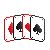

Exercise (Week 3)
Table of Contents

This exercise has two separate submissions. Please make sure you do both!
DUE: Tue 25 June 14:00:00
1 Quickcheck and sorting (6 Marks)
Download the exercise tarball and extract it to a directory in your
home directory at CSE. This tarball contains a file, called Ex02.hs,
wherein you will do all of your programming.
To test your code, run the following shell commands to open a GHCi session:
$ 3141
newclass starting new subshell for class COMP3141...
$ cabal repl
Resolving dependencies...
Configuring Ex02-1.0...
Preprocessing executable 'Ex02' for Ex02-1.0..
GHCi, version 8.2.2: http://www.haskell.org/ghc/ :? for help
[1 of 1] Compiling Ex02 (Ex02.hs, interpreted)
Ok, one module loaded.
*Ex02> quickCheck (sortProp2 dodgySort1)
...
Calling quickCheck in the above way will run the given QuickCheck property
with 100 random test cases.
Note that you will only need to submit Ex02.hs, so only make changes
to that file.
Download the exercise tarball and extract it to a directory on
your local machine. This tarball contains a file, called Ex02.hs,
wherein you will do all of your programming.
To test your code, run the following shell commands to open a GHCi session:
$ stack repl
Configuring GHCi with the following packages: Ex02
Using main module: 1. Package 'Ex02' component exe:Ex02 ...
GHCi, version 8.2.2: http://www.haskell.org/ghc/ :? for help
[1 of 1] Compiling Ex02 (Ex02.hs, interpreted)
Ok, one module loaded.
*Ex02> quickCheck (sortProp2 dodgySort1)
...
Calling quickCheck in the above way will run the given QuickCheck property
with 100 random test cases.
Note that you will only need to submit Ex02.hs, so only make changes
to that file.
The code below, given in Ex02.hs, defines five properties any sorting
function should meet, but only the fifth property specifies it fully,
by simply comparing the output of the tested sorting function to
the output of a correct (but inefficient) implementation of sorting.
-- Properties of sorting function sortProp1 :: ([Int] -> [Int]) -> [Int] -> Bool sortProp1 sortFn xs = sortFn xs == sortFn (reverse xs) sortProp2 :: ([Int] -> [Int]) -> Int -> [Int] -> [Int] -> Bool sortProp2 sortFn x xs ys = x `elem` sortFn (xs ++ [x] ++ ys) sortProp3 :: ([Int] -> [Int]) -> [Int] -> Bool sortProp3 sortFn xs = isSorted (sortFn xs) where isSorted (x1 : x2 : xs) = (x1 <= x2) && isSorted (x2 : xs) isSorted _ = True sortProp4 :: ([Int] -> [Int]) -> [Int] -> Bool sortProp4 sortFn xs = length xs == length (sortFn xs) sortProp5 :: ([Int] -> [Int]) -> [Int] -> Bool sortProp5 sortFn xs = sortFn xs == insertionSort xs insertionSort :: [Int] -> [Int] insertionSort xs = foldr insertSorted [] xs where insertSorted x [] = [x] insertSorted x (y : ys) | x <= y = x : y : ys | otherwise = y : insertSorted x ys
Your task is to define functions, dodgySort1 to dodgySort4, stubs of which are provided
in Ex02.hs, each of which meet some of the properties, but not all. For example dodgySort1:
-- prop2 & 4, but not prop1 & 3 & 5 dodgySort1 :: [Int] -> [Int] dodgySort1 xs = error "'dodgySort1' unimplemented"
should meet property 2 and 4, but not 1, 3, and 5. So, using QuickCheck to test your implementation with
quickCheck (sortProp1 dodgySort1)
should fail with a counter example, but
quickCheck (sortProp2 dodgySort1)
should succeed.
Your implementations don't have to resemble real sorting functions, as long as they pass the tests they are supposed to pass, and fail the tests they are supposed to fail.
1.1 Submission instructions
You can submit your exercise by typing:
$ give cs3141 Ex02 Ex02.hs
on a CSE terminal, or by using the give web interface. Your file must be named Ex02.hs (case-sensitive!).
A dry-run test will partially autotest your solution at submission time. To get full marks, you will need to perform further testing yourself.
2 Art (3 Marks)
In last week's lecture, we started writing the function fracTree, which generates an image of a stylised tree. Now
it's your turn to come up with some interesting art works!
Download the artwork tarball and extract it to a directory in your
home directory at CSE. This tarball contains a file, called Art.hs,
wherein you will express your artistic creations.
You can save your images to disk much like in the first exercise.
Note that you will only need to submit Art.hs, so only make changes
to that file.
Download the artwork tarball and extract it to a directory on
your local machine.
This tarball contains a file, called Art.hs,
wherein you will express your artistic creations.
You can save your images to disk much like in the first exercise.
Note that you will only need to submit Art.hs, so only make changes
to that file.
Write your own parametrisable recursive function to generate a (pretty) image, and call it in the
definition of art with parameters such that it results in the best image you can generate, as we are doing here with fracTree:
art :: Picture art = fracTree
You are allowed to use the fracTree code a basis to get started (but change the tree function to generate more interesting trees),
or look at this Haskell tutorial for other examples of our graphics library, or even search online
for fractal examples to get some ideas.
This question will not be automarked, but assessed by your peers according to the following three criteria, each worth one mark:
- Is the function which generates the image a recursive function?
- Can you parametrise with at least two different parameters, influening for example, colour, shape, size in addition to the iteration depth?
(note that the example,
fracTree, does not meet this criteria as there are no parameters to the function). - Is it a real attempt to generate a nice image?
Note you will not be able to participate in peer review (worth an additional 2 marks) if you do not submit an artwork. So spend some time and be creative!
2.1 Submission Instructions
You can submit your artwork by typing:
$ give cs3141 Art Art.hs
Or by using the give web interface.
The submission dryrun will give you a pseudo-anonymous identifier (a small string of hex digits). If you look up that identifier on the 3141 Gallery, you can see your submission, as well as the submissions of other students! See who can make the most interesting artwork!